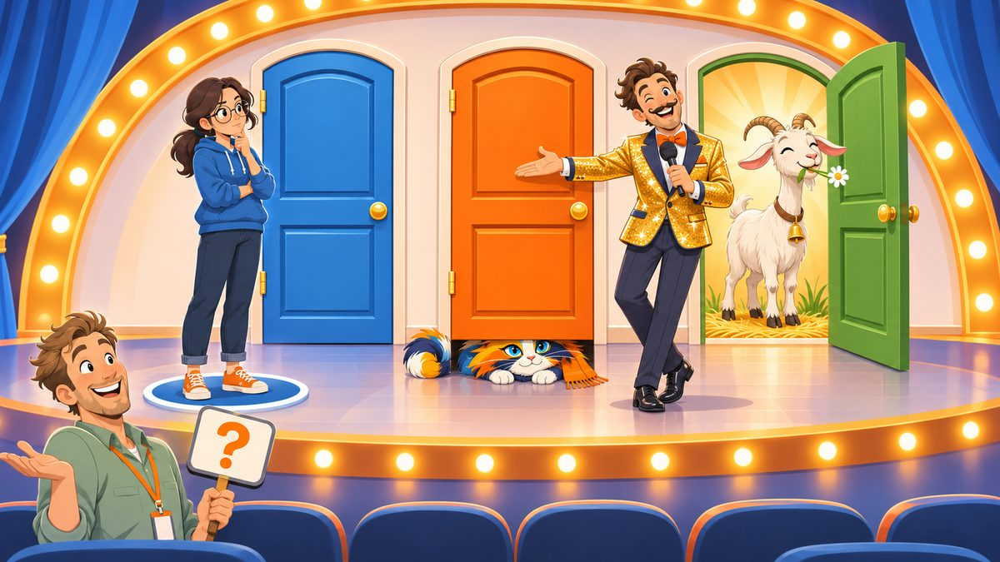
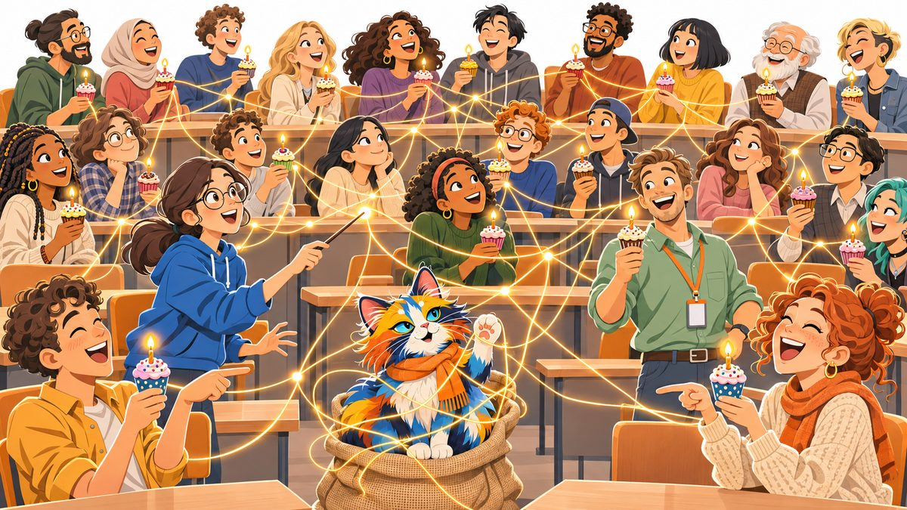

В 1990 году эту задачу прислали Мэрилин вос Савант — она вела колонку ответов читателям в журнале Parade. Она ответила: «Меняйте дверь — шанс выиграть 2/3». Ей пришло около 10 000 писем, большинство — с уверенным «там 50 на 50», почти тысяча — от людей с научной степенью. Права оказалась она: учителя по всей стране разыгрывали игру с классами, и «менять» выигрывало примерно в двух случаях из трёх. Даже Пол Эрдёш, по рассказу коллеги, согласился, только увидев симуляцию.
Занятие 3 · блок 10
Монти Холл и дни рождения

Две задачи, на которых интуиция ломается у всех и которые любят на собеседованиях. Обе — на условную вероятность. «Парадоксами» их называют не из-за противоречия, а потому, что верный ответ спорит с интуицией.
Менять дверь или нет?
Ты на телешоу. Перед тобой три двери: за одной — машина, за двумя — козы. Ты выбираешь дверь. Ведущий, который знает, где машина, открывает другую дверь — там коза — и предлагает поменять выбор. Менять или нет?
Выбери дверь.
Как Монти Холл поссорил читателей с Мэрилин вос Савант
Здесь ошибаются и профессионалы. Если интуиция спорит с расчётом, не спорь, а напиши десять строк симуляции и посмотри.
Почему менять выгоднее
- Равновероятные исходы. 300 игр, мы всегда выбираем дверь 1. Машина за дверью 1, 2, 3 — по 100 игр.
- Правило ведущего. Машина за 1: ведущий открывает 2 или 3 наугад — дверь 3 в 50 играх. Машина за 2: открыть можно только 3 — во всех 100. Машина за 3: дверь 3 не открывает.
- Оставляем совместимые с наблюдением «открыта дверь 3, там коза»: игр.
- Перевзвешиваем. Машина за дверью 2 — в 100 из 150, ; за нашей дверью — в 50 из 150, .
- Интуиция через 100 дверей. Ты выбрал одну дверь из 100, ведущий открыл 98 с козами и оставил одну. Машина почти наверняка там.
- Если ведущий не знает и открывает дверь наугад: машина за 1 — 50 игр, за 2 — 50 игр, за 3 — 50 игр, но там машина, и эти игры с наблюдением «коза» не совпадают. Остаются 50 и 50 — шансы .
Менять — , не менять — . Одна и та же картинка «открыта дверь с козой» значит разное в зависимости от того, как появились данные, — как в опросе оставшихся и как с подглядыванием в A/B-тестах.
Парадокс дней рождения

Какова вероятность, что в этой аудитории найдутся двое с одинаковым днём рождения? Назови догадку, потом проверим: каждый называет свой день рождения.
Проще посчитать вероятность, что совпадений нет: второй человек не совпал с первым — , третий не совпал с двумя — , и так далее:
Вероятность хотя бы одного совпадения дней рождения
Решение
Шаг 1. Числа: 20 человек — 41%, 23 — 51%, 30 — 71%, 40 — 89%, 50 — 97%.
Шаг 2. Прикидка через пары. При 23 людях пар ; .
Шаг 3. «Со мной». — в 8 раз меньше. Интуиция думает про себя, а пар — 253.
Шаг 4. В продукте. Случайные 6-значные промокоды, вариантов: 50% совпадения при , то есть уже примерно после 1 200 кодов.
23 человека — 51%, потому что пар 253. Совпадение именно с тобой — только 6%.
Задача 25. Два ребёнка
В семье двое детей. Известно, что хотя бы один из них мальчик. Какова вероятность, что оба — мальчики? А если известно, что мальчик — старший ребёнок?
Решение
Шаг 1. Исходы (старший, младший), равновероятные: ММ, МД, ДМ, ДД.
Шаг 2. «Хотя бы один мальчик» исключает только ДД: остаются ММ, МД, ДМ — оба мальчики в 1 из 3.
Шаг 3. «Старший — мальчик»: остаются ММ, МД — 1 из 2.
и . Разница — в том, какое условие сообщили: та же мысль, что в Монти Холле.
Перечисли варианты
Интуиция о вероятностях ломается, когда мы не замечаем, как получены данные — ведущий знает или нет, — или сколько вариантов на самом деле: пар в комнате больше, чем людей. Лекарство одно: перечисли варианты или посчитай в штуках.